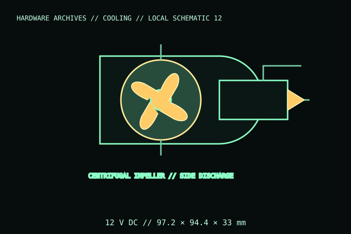

[ INDIVIDUAL COMPONENT // COOLING ]
Delta BFB1012H
Delta 12 V centrifugal blower for equipment/server airflow. The model has a non-square housing and outlet; it is not a drop-in axial case fan. Confirm the exact suffix, lead termination, and duct arrangement against the blower label and manufacturer drawing.

IDENTIFICATION: Match the complete BFB1012H model, label, and lead configuration before installation. This catalog entry covers a 12 V centrifugal blower—not the similarly named axial-fan families.
Specifications
| Catalog subcategory | Server fans and blowers |
|---|---|
| Exact model | Delta BFB1012H centrifugal blower |
| Housing envelope | 97.2 × 94.4 × 33 mm; mounting orientation and outlet direction must follow the drawing. |
| Electrical rating | 12 V DC; 0.80 A rated current / 9.60 W rated input; maximum values and startup behavior are in the manufacturer datasheet. |
| Speed | 3,600 rpm reference speed per manufacturer specification; performance varies with the installed duct/system resistance. |
| Connector / host | DC blower with model-specific leads. Do not assume a standard 4-pin PWM plug, pinout, or motherboard-header compatibility; inspect the exact drawing/connector. |
| Clearance | Requires the blower’s inlet, outlet, and duct route to remain unobstructed; check chassis/bracket dimensions against the 97.2 × 94.4 × 33 mm body. |
Compatibility, installation & service
- Use a regulated 12 V DC source/controller rated for the blower’s current and startup load; 9.6 W nominal exceeds typical motherboard fan-header budgets.
- Confirm connector housing, wire assignment, polarity, tach lead if present, mounting points, and exhaust direction from the specific datasheet drawing before wiring.
- Do not obstruct the inlet/outlet or substitute an axial fan based on nominal airflow alone; host impedance and duct geometry are different.
- Secure the blower to its intended mount and keep cables clear of its intake and discharge.
Service notes
Disconnect the 12 V supply before cleaning. Remove dust from the inlet, outlet, and duct without forcing debris into the impeller. Do not dismantle the sealed bearing; replace the blower if the housing, wiring, or bearing is damaged or noisy.
Manufacturer references
- Delta Fan — BFB1012H specification PDFManufacturer datasheet for the exact centrifugal blower, electrical/mechanical ratings, and drawing.
- Delta Fan — Product supportManufacturer support and product documentation.
Verify lead configuration and ratings against the manufacturer document and unit label. This catalog entry is not an electrical compatibility guarantee.